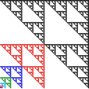

| Do you see why the sequence of gaskets runs off to the lower left corner? |
| The red gasket in square 1 comes from
the allowed transitions 2 → 1, 3 → 1, and 4 → 1. |
| The blue gasket is
T1(red gasket). |
| The green gasket is
T1(blue gasket), and so also is
T1(T1(red gasket)). |
| And so on. |
| |  |
|